NJGNETSECURITY · NETWORK · INFRASTRUCTURE
보안 인프라 포트폴리오
남재근
구축한 환경이 실제로 동작하는지
끝까지 확인합니다.
네트워크 구성, 접근통제, 웹 취약점 분석과 시스템 점검을 경험했습니다. 설정을 적용하는 데서 끝내지 않고 직접 시험하며 문제의 원인을 찾는 과정을 중요하게 생각합니다.
- 교육
- 가디언즈 정보보호 및 보안 인프라 운영 관리
- 프로젝트
- 팀 프로젝트 3회
- 수상
- 2차 프로젝트 우수상 · 창작 워게임 팀 1위
- Web
- https://njgnet.github.io/
PROJECT EXPERIENCE
직접 참여한 프로젝트


문제를 구간별로 나누어 확인합니다.
예상과 다른 결과가 나오면 한 번에 여러 설정을 바꾸기보다 연결 상태, 적용 위치, 정책 순서와 서비스 조건을 나누어 원인을 찾았습니다. 조치 후에는 같은 조건으로 다시 시험해 결과가 달라졌는지 확인했습니다.
1차 프로젝트
SIMMIT PAY 네트워크 구축
Packet Tracer 기반 통합 인프라와 ACL 정책 검증
본사와 지사 네트워크를 연결하고 VLAN과 라우팅을 확인한 뒤 ACL을 적용했습니다. VPN과 Dynamic NAT는 팀원과 협업했으며, 저는 ACL 설정과 전체 통신 검증에 가장 집중했습니다.
- 핵심 담당
- ACL 정책·통신 테스트
- 검증 범위
- 본사·지사·재택근무 3개 환경
- 증거 자료
- 본사·지사 시연 영상 2개

정책 한 줄로 정상 통신까지 차단됐습니다.
처음에는 통신이 되지 않을 때마다 ACL부터 수정해 원인을 구분하기 어려웠습니다.
통신 구간과 조건을 하나씩 분리했습니다.
ACL을 제외한 기본 라우팅, 적용 인터페이스와 방향, 규칙 순서, IP와 서비스 포트를 차례대로 확인했습니다.
1차 프로젝트 · 검증
허용과 차단을 함께 확인했습니다.


- 기본 연결성ACL을 제외했을 때 라우팅과 인터페이스가 정상인지 확인
- 적용 위치인터페이스의 inbound·outbound 방향 확인
- 규칙 순서필요한 permit보다 넓은 deny가 먼저 평가되는지 점검
- 서비스 단위Ping, WEB, FTP, DNS, DB, LOG를 개별 시험
- 반대 조건허용 대상은 연결되고 비인가 대상은 실패하는지 함께 검증
배운 점
ACL 명령어 자체보다 통신 문제를 한 구간씩 나누어 확인하는 방법을 더 많이 익혔습니다. 서버 구축은 제 담당이 아니었지만, 필요한 통신이 각 서버까지 도달하는지 확인하고 서버 담당 팀원과 막히는 구간을 함께 찾았습니다.
1차 프로젝트 · 정책 기준과 반복 검증
통신 구간을 네 가지로 나누어 다시 확인했습니다.
본사 내부
부서별 WEB·FTP·DNS 사용 여부를 확인하고 DB와 LOG는 필요한 부서만 접근하도록 구분했습니다.
본사 → 지사
지사 WEB 접근과 필요한 서비스 통신은 허용하고, 임의의 Ping과 불필요한 부서 간 통신은 차단했습니다.
지사 → 본사
본사 WEB·DNS와 지사 서버의 LOG 전송을 확인하고 그 외 내부 구간 접근은 제한했습니다.
재택근무
업무에 필요한 WEB·FTP만 허용하고 내부망으로 직접 보내는 Ping은 차단했습니다.
반복 검증 과정
한 규칙을 수정해도 전체 시나리오를 처음부터 다시 실행했습니다.
- ACL을 제외한 기본 라우팅과 인터페이스 확인
- 출발지·목적지·서비스 기준을 한 항목씩 적용
- 허용 대상의 성공과 차단 대상의 실패를 함께 확인
- VPN·Dynamic NAT까지 포함한 최종 상태에서 본사·지사 시연 영상 제작
4구간ACL 테스트 범위
3환경본사·지사·재택근무
2개직접 제작한 시연 영상
1차 프로젝트 · 역할과 산출물
직접 맡은 부분과 협업한 부분을 구분했습니다.
ACL 정책·검증
- 본사·지사 접근 기준 정리
- ACL 규칙과 적용 방향 설정
- 허용·차단 시나리오 반복 테스트
- 본사·지사 시연 영상 제작
VLAN·Routing
Packet Tracer에서 부서별 네트워크와 구간 연결을 구성하고 전체 통신 흐름을 확인했습니다.
VPN·Dynamic NAT
팀원과 함께 구성했으며, 팀원이 더 큰 비중으로 수행한 영역이어서 공동 작업으로 구분했습니다.
서버 연결 검증
서버 구축은 다른 팀원이 담당했습니다. 저는 네트워크 관점에서 필요한 통신이 서버까지 도달하는지 확인했습니다.
계획부터 최종 검증까지
- 계획서 작성·피드백프로젝트 범위와 역할을 정리해 먼저 제출
- 네트워크 구성VLAN과 OSPF Routing으로 본사·지사·외부 구간 연결
- ACL 정책 적용업무 요구사항을 부서·서비스별 허용·차단 규칙으로 변환
- VPN·Dynamic NAT 협업팀원이 중심이 되어 구성한 기능을 전체 환경에서 함께 확인
- 시연 및 최종보고완성된 환경을 본사·지사 영상 2개와 PPT 보고서로 정리
1차 프로젝트 · 최종 결과물
정책 기준과 테스트 결과를 다시 확인할 수 있게 남겼습니다.

제출 및 증거 자료
- 프로젝트 계획서
- ACL 정책 기준표
- 1차 프로젝트 최종보고서
- 본사 네트워크 시연 영상
- 지사 네트워크 시연 영상
- Packet Tracer 네트워크 구성 자료
전체 구성이 끝난 상태에서 통신 결과를 녹화했습니다.
ACL뿐 아니라 VPN과 Dynamic NAT까지 완료한 최종 환경에서 본사와 지사의 접근 허용·차단 및 서비스 통신을 시나리오별로 확인했습니다.
설정 자체보다 원인을 나누어 확인하는 방법을 익혔습니다.
허용 테스트만으로 끝내지 않고 차단돼야 하는 접근도 함께 시험했습니다. 서버 문제는 담당 팀원과 어느 구간에서 막혔는지 함께 확인했습니다.
ACL부서·서비스별 최소 권한
2개본사·지사 시연 영상
3환경본사·지사·재택근무
1차 프로젝트 · 프로젝트를 마치고
ACL 설정보다 통신 문제를 구간별로 확인하는 방법을 익혔습니다.
명령어 형식만 맞추는 것으로는 정책을 완성할 수 없었습니다.
ACL을 적용하기 전에 누가 어느 서버의 어떤 서비스를 사용해야 하는지부터 정리해야 했습니다. 허용해야 하는 통신뿐 아니라 차단돼야 하는 접근이 실제로 막히는지도 함께 확인해야 했습니다.
어려웠던 점
규칙 하나가 잘못되면 정상 통신까지 막혔습니다.
ACL의 정책 순서와 적용 방향이 서로 영향을 주기 때문에 수정한 부분만 확인해서는 원인을 찾기 어려웠습니다.
해결 과정
본사·지사·재택근무의 통신 기준을 먼저 정리했습니다.
출발지와 목적지, 서비스, 인터페이스와 적용 방향을 나누고 허용·차단 항목을 하나씩 시험했습니다.
협업 방식
서버 담당 팀원과 통신이 막히는 구간을 함께 확인했습니다.
서버의 세부 구축은 다른 팀원이 담당했지만, 네트워크 관점에서 필요한 통신이 어느 구간까지 도달하는지 확인했습니다.
최종 검증
VPN과 Dynamic NAT까지 포함한 전체 환경을 다시 시험했습니다.
구축을 마친 뒤 본사와 지사의 통신 시나리오를 직접 테스트하고 시연 영상 2개를 제작했습니다.
배운 점
한 번에 여러 설정을 바꾸기보다 통신 경로를 구간별로 나누고, 정상 동작과 차단 결과를 함께 확인해야 문제의 원인을 더 정확하게 찾을 수 있다는 점을 배웠습니다.
2차 프로젝트 · 우수상
Easy Hotel 취약점 분석과 시스템 점검
6건웹 취약점 재현·조치
67개시스템 점검 항목
9 → 0조치 전후 취약 항목
64장최종 통합보고서
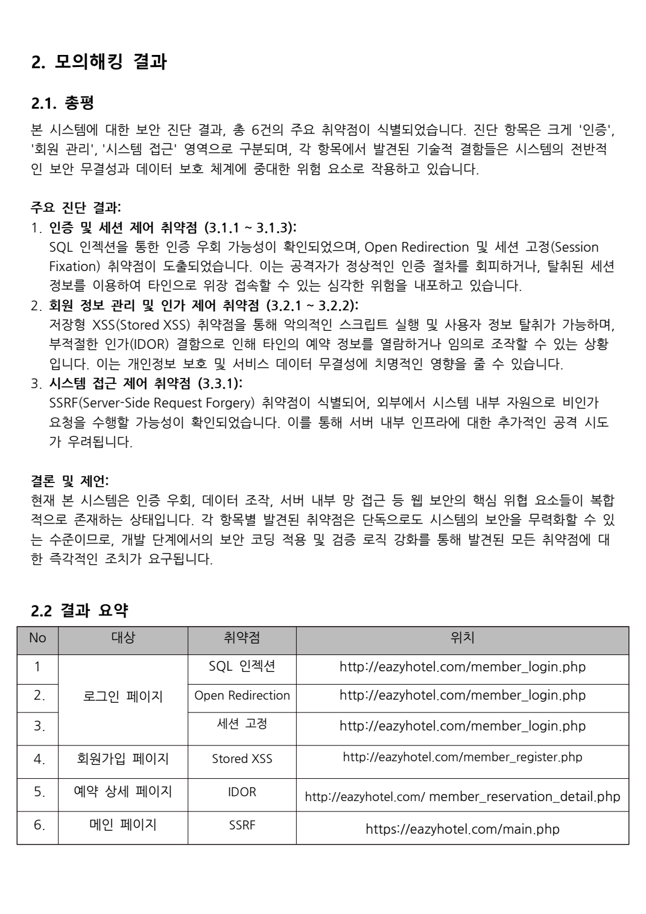
공격 조건을 만들고 조치 후 같은 방법으로 재시험했습니다.
취약 코드 초안을 실제 환경에 적용한 뒤 공격이 재현되는 이유를 확인하고, 코드를 수정한 후 같은 입력으로 다시 시험해 차단 여부를 확인했습니다.
모의해킹 결과와 시스템 점검 내용을 정리했습니다.
취약점의 원인, 재현 조건과 조치 결과를 모의해킹 결과보고서에 정리하고 시스템 점검·최종보고서 작성에도 참여했습니다.
2차 프로젝트 · 구성과 진행
호텔 서비스의 공격부터 관제까지 연결했습니다.
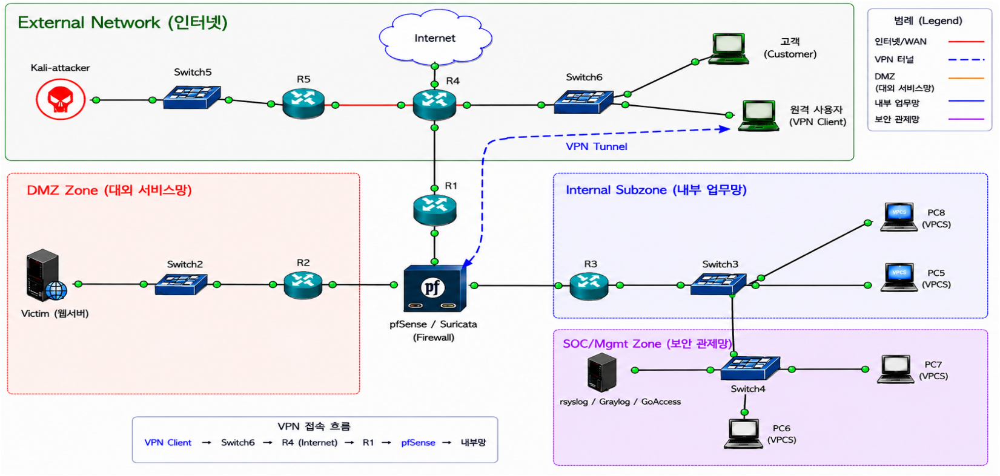
계획서 제출 후 피드백을 반영해 진행했습니다.
- 계획서 제출호텔 예약 서비스를 기준으로 구축·공격·점검 범위 설정
- 환경 구성GNS3 네트워크, pfSense·Suricata, 웹·DB와 로그 환경을 역할별로 구축
- 취약점 재현·조치6개 웹 취약점의 공격 조건을 확인하고 코드 수정 후 재시험
- 시스템 점검67개 항목 공통 틀과 집계 방식 구성, 조치 전후 결과 비교
- 보고서 제출모의해킹·시스템 점검·셸 스크립트·64장 통합보고서 정리
제가 더 집중한 부분
전체 네트워크 구성에 참여한 뒤 취약점 재현과 조치 확인, 모의해킹 결과보고서 작성, 시스템 점검 스크립트 틀 작성에 더 많은 시간을 사용했습니다. pfSense·Suricata 정책과 웹·DB·관제 도구는 담당 팀원이 나누어 작업했습니다.
2차 프로젝트 · 웹 취약점 검증
공격 화면보다 원인과 조치 후 결과를 함께 봤습니다.
SQL Injection
로그인 입력값과 쿼리 처리 방식을 확인하고 Prepared Statement와 비밀번호 검증 적용 후 같은 입력이 막히는지 재시험했습니다.
Open Redirection
로그인 이후 전달되는 이동 경로를 조작해 외부 주소로 이동하는지 확인하고 허용 경로 검증을 적용했습니다.
IDOR
예약 번호만 바꾸어 다른 사용자의 정보에 접근되는 조건을 확인하고 로그인 사용자와 예약 소유자 검증을 추가했습니다.
File Upload
확장자와 MIME 형식 검증이 부족한 업로드 경로를 시험하고 허용 형식과 저장 위치를 제한했습니다.
관리자 페이지 접근
일반 사용자가 관리자 기능에 접근할 수 있는 조건을 확인하고 서버 측 권한 검사를 보완했습니다.
Stored XSS
저장된 입력값이 다시 출력될 때 스크립트가 실행되는지 확인하고 출력 인코딩과 입력 검증을 적용했습니다.
보고서 구성
취약점 설명 → 취약한 코드 → 재현 절차 → 공격 증거 → 대응 방안 → 수정 코드 → 조치 후 결과의 순서로 정리했습니다. 공격 성공 여부만 보여주는 대신 왜 발생했고 무엇을 바꾼 뒤 막혔는지 이어서 확인할 수 있게 작성했습니다.
2차 프로젝트 · 문제 해결 과정
점검 스크립트의 틀을 먼저 시험했습니다.
67개 항목을 나누어 작성하기 전에 공통 출력 형식과 집계 기준이 필요했습니다.
멘토님의 피드백을 바탕으로 AI로 초안을 잡고 Ubuntu에서 명령어와 경로를 직접 확인했습니다.
U-01~U-67 실행 결과가 한 화면에 집계되는 형태를 캡처해 팀원들에게 먼저 보여줬습니다.
양호 58개·취약 9개에서 설정을 수정한 뒤 67개 전체 양호를 확인했습니다.
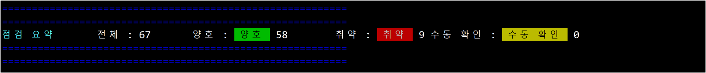
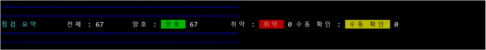
제가 먼저 보여준 부분
점검 함수의 형태와 결과 집계 방식을 먼저 실행해 본 뒤 “이런 방식으로 합치면 될 것 같다”고 공유했습니다. 각 팀원이 작성한 항목을 같은 형식에 넣을 수 있도록 공통 출력 함수와 실행 순서를 정리했습니다.
2차 프로젝트 · 제안과 검증
채택 여부와 별개로 직접 동작까지 확인했습니다.
CRON · TTY OUTPUT TEST
예약 실행 결과를 활성화된 Ubuntu 터미널에서 바로 확인하는 방식
점검 결과를 로그 파일에 저장하는 것에 더해, 관리자가 별도 명령어를 입력하지 않아도 현재 열려 있는 터미널에서 결과를 확인할 수 있으면 좋겠다고 생각했습니다.
실행 시간을 지정하고 활성 터미널로 결과를 보내는 방법을 직접 시험했습니다. 팀의 최종 운영 방식으로 채택되지는 않았지만, 화면에 결과가 나타나는 과정까지 확인해 시연 영상으로 남겼습니다.
시연 영상 열기 ↗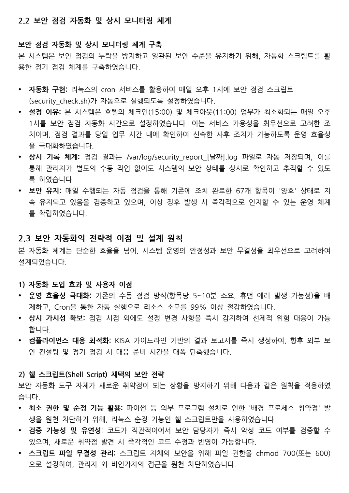
이 경험에서 중요했던 점
제안이 최종 결과물에 포함됐다는 식으로 과장하지 않았습니다. 아이디어를 말하는 데서 끝내지 않고 실제 환경에서 구현하고, 정상적으로 동작하는지 영상으로 남긴 과정 자체를 제 경험으로 정리했습니다.
2차 프로젝트 · 역할과 산출물
제가 맡은 작업과 팀의 작업을 구분해 정리했습니다.
취약점 분석·재현
- 공격 조건과 입력값 테스트
- 보안 조치 후 같은 공격 재시험
- 모의해킹 결과보고서 작성 참여
점검 스크립트 틀
67개 함수가 같은 형식으로 출력되도록 공통 함수, 결과 집계와 실행 순서를 먼저 구성했습니다.
cron 터미널 출력
예약 실행 결과를 활성 Ubuntu 터미널에 보여주는 방식을 시험하고 시연 영상으로 남겼습니다.
결과보고서 정리
모의해킹, 시스템 점검과 64장 최종 통합보고서 작성 과정에 참여했습니다.
최종 제출 자료
- 프로젝트 계획서
- 모의해킹 결과보고서
- 시스템 점검보고서
- 시스템 점검 셸 스크립트
- 64장 최종 통합보고서
- cron 터미널 출력 테스트 영상
RESULT
2차 프로젝트 1위 · 우수상
취약점 재현과 보안 조치, 시스템 점검 및 문서 결과를 팀원들과 함께 완성해 우수상을 받았습니다.
2차 프로젝트 · 프로젝트를 마치고
완성된 결과보다 막힌 부분을 풀어가는 과정이 더 기억에 남았습니다.
웹 코드와 운영체제 설정까지 확인 범위가 넓어졌습니다.
1차 프로젝트에서는 네트워크 연결과 ACL에 집중했다면, 2차 프로젝트에서는 취약한 웹 코드와 Ubuntu 시스템 설정을 함께 확인했습니다. 취약 코드 초안을 실제 환경에 적용한 뒤 공격이 발생하는 이유를 분석하고, 코드를 수정한 다음 같은 입력으로 다시 시험해 차단되는지 확인했습니다.
어려웠던 점
67개 점검 항목을 같은 형식으로 합칠 기준이 없었습니다.
팀원들이 항목을 나누어 작성하기 전에 출력 형식, 결과 집계 방식과 실행 순서를 먼저 맞춰야 했습니다.
해결 과정
멘토님의 피드백을 받고 초기 틀부터 시험했습니다.
공통 출력 함수와 집계 방식을 먼저 실행해 결과 화면을 캡처한 뒤 팀원들에게 보여주며 작업 방향을 제안했습니다.
추가 제안
예약 실행 결과를 활성 Ubuntu 터미널에 보여주는 방식을 시험했습니다.
최종 운영 방식으로 채택되지는 않았지만 직접 동작하는지 확인했고, 결과가 화면에 나타나는 과정을 시연 영상으로 남겼습니다.
재검증 결과
양호 58개·취약 9개에서 67개 전체 양호까지 확인했습니다.
설정을 수정한 뒤 같은 스크립트를 다시 실행해 조치 전후 결과가 달라졌는지 확인했습니다.
배운 점
아이디어를 제안하는 데서 끝내지 않고 실제 환경에서 구현해 본 뒤 정상적으로 동작하는지 확인하는 과정이 중요하다는 것을 배웠습니다. 또한 결과만 완성하는 것보다 막힌 부분을 어떤 순서로 나누어 확인하고 해결할지가 중요하다는 점을 느꼈습니다.
3차 프로젝트
PrivaDrive 기업 정보보호 진단
7종웹 취약점 점검
4종악성파일 분석 도구
56장직접 작성한 발표자료
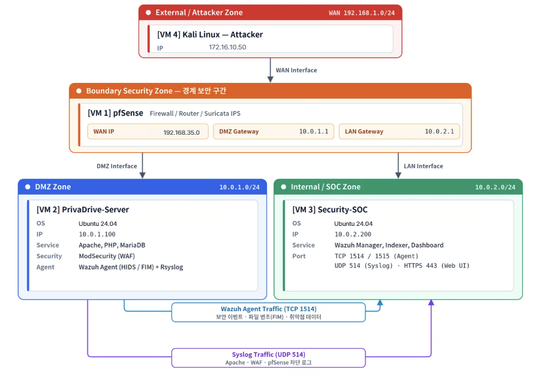
공격 결과와 발생 조건을 확인하고 조치 과정에 참여했습니다.
애플리케이션 코드와 보안 설정에서 수정할 부분을 정리하고, 조치 후 재시험 결과를 확인했습니다.
팀 산출물을 56장 발표 흐름으로 다시 구성했습니다.
계획서, 구성도, 모의해킹, 탐지·차단, 로그와 악성코드 분석 결과를 목적→점검→발견→조치 순서로 정리했습니다.
3차 프로젝트 · 점검과 설명
공격·조치·탐지 결과가 한 흐름으로 이어지게 정리했습니다.
취약점 조치
7개 웹 공격의 입력값과 실제 영향을 확인하고 애플리케이션 코드와 보안 설정에서 수정할 부분을 정리했습니다.
탐지와 차단 확인
같은 공격이 WAF·IDS·Wazuh에서 어떻게 보이는지 확인하고 조치 후 재시험 결과를 비교했습니다.
발표 흐름 구성
계획서부터 구성도, 공격, 탐지·차단, 로그, 악성파일 분석과 셸 스크립트까지 56장으로 다시 구성했습니다.
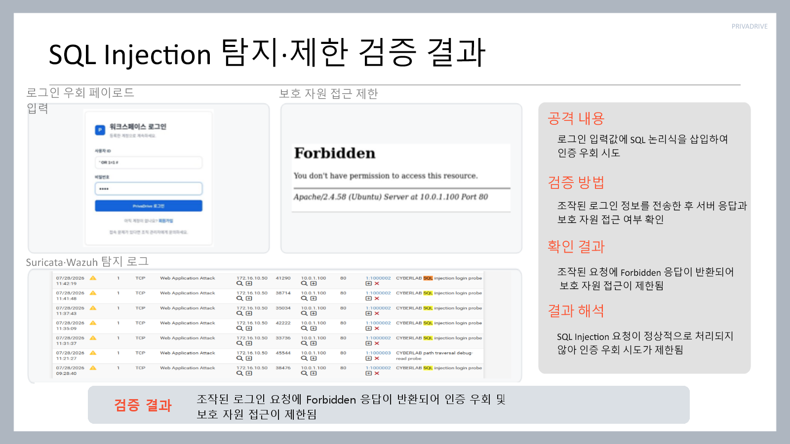
팀원별 결과를 나열하는 것만으로는 흐름이 보이지 않았습니다.
각 화면에서 무엇을 시도했고 어느 계층에서 막혔으며 어떤 로그가 남았는지를 다시 확인해야 했습니다.
목적 → 점검 → 발견 → 조치 → 재시험 순서를 맞췄습니다.
기술 구현은 팀 협업 결과로 구분하고, 제가 직접 맡은 취약점 조치 참여와 발표자료 전체 구성은 분명하게 표시했습니다.
3차 프로젝트 · 자동 대응과 악성파일 분석
탐지 결과가 실제 대응으로 이어지는 과정도 확인했습니다.
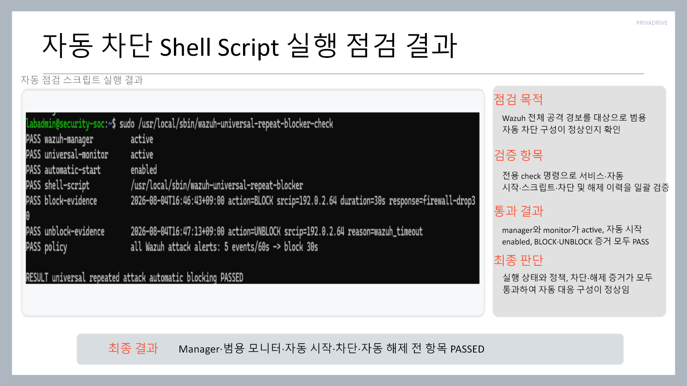
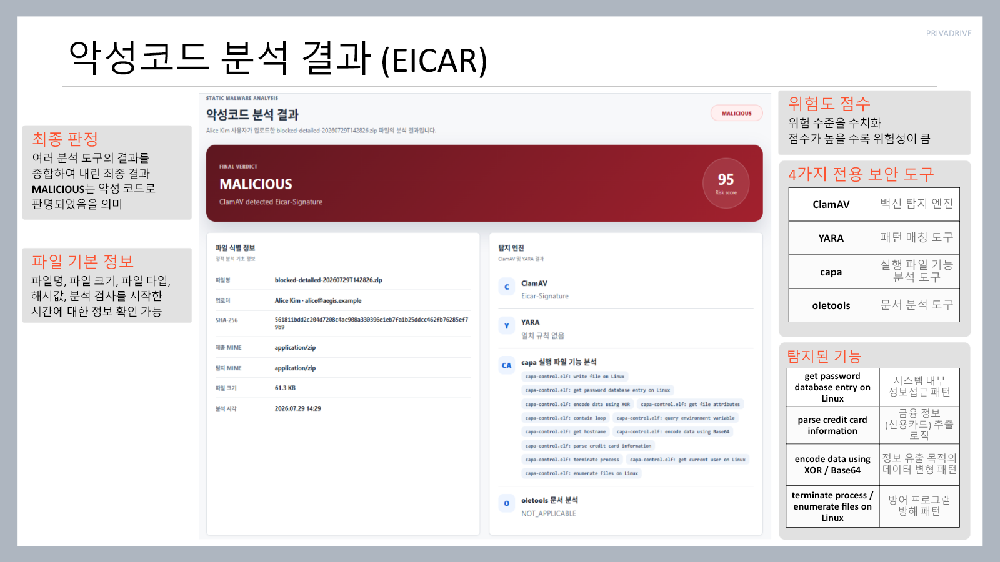
탐지에서 끝내지 않고 일정 시간 차단되는지 확인했습니다.
Wazuh 경보를 기준으로 반복 공격 IP를 차단하고, 차단 목록과 자동 해제 결과까지 점검했습니다.
업로드 파일을 분석·격리하고 관제 화면까지 연결했습니다.
EICAR 파일을 기준으로 여러 분석 도구의 결과와 격리 경로, Wazuh 이벤트가 이어지는지 확인했습니다.
발표자료에 정리한 방식
도구 이름을 나열하기보다 어떤 입력이 탐지됐고, 어느 단계에서 차단 또는 격리됐으며, 최종적으로 어떤 로그가 남았는지를 화면 순서에 맞춰 배치했습니다.
3차 프로젝트 · 역할과 최종 제출물
팀의 결과를 발표 가능한 한 흐름으로 다시 구성했습니다.
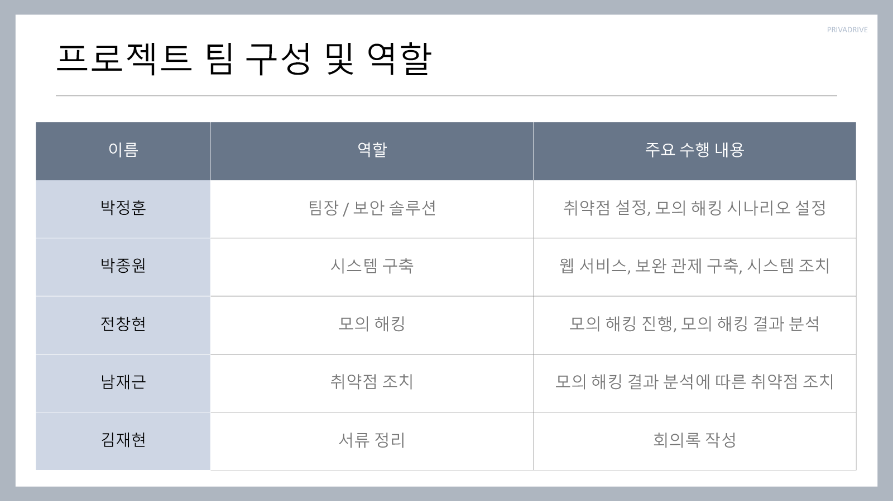
직접 맡은 부분
취약점 조치 참여 · 56장 발표자료 전체 작성
모의해킹 결과에서 발생 조건과 영향을 확인하고 조치 내용을 정리했습니다. 이후 계획서, 구성도, 공격·조치, 탐지·차단, Wazuh 로그, 악성파일 분석과 셸 스크립트 결과를 발표 순서로 다시 구성했습니다.
초기 웹 서버 코드는 팀원이 만든 참고안에서 시작했으며, 시스템 시연 영상 역시 팀원이 제작한 자료입니다. 해당 부분은 제 개인 구현 성과로 표현하지 않았습니다.
최종 제출 자료
- 3차 프로젝트 최종 계획서
- 네트워크 구성도
- 모의해킹 결과보고서 45P
- 악성코드 분석 결과보고서
- 기업정보보호 결과보고서 21P
- 자동 차단 셸 스크립트
- 발표자료 56P
- 팀 제작 시연 영상
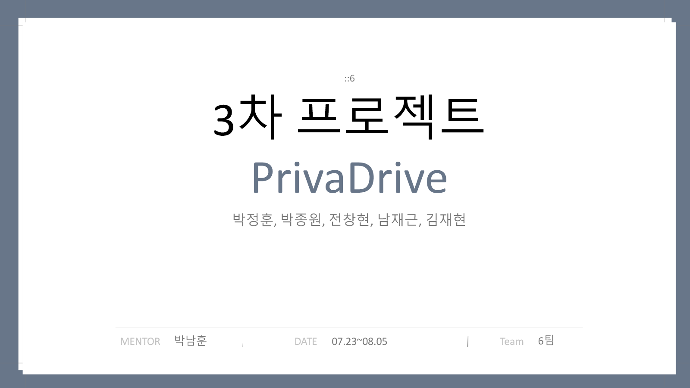
3차 프로젝트 · 프로젝트를 마치고
팀원별 결과를 하나의 흐름으로 설명하는 과정이 가장 어려웠습니다.
네트워크, 웹 취약점과 관제 결과가 하나의 환경 안에서 연결됐습니다.
같은 공격도 애플리케이션 코드, WAF, IDS와 관제 화면에서 보이는 정보가 달랐습니다. 각각의 결과를 나열하는 것만으로는 프로젝트 전체 과정이 잘 전달되지 않아 공격부터 조치와 재시험까지 흐름을 다시 확인했습니다.
어려웠던 점
팀원들이 맡은 결과의 형식과 설명 순서가 서로 달랐습니다.
화면과 로그만 모으면 무엇을 시도했고 어느 단계에서 탐지되거나 차단됐는지 한눈에 파악하기 어려웠습니다.
확인 과정
각 결과의 공격 조건과 조치 내용을 다시 확인했습니다.
팀원들에게 맡은 작업을 물어보고 자료를 살펴보며 애플리케이션, 보안 장비와 관제 로그가 어떻게 이어지는지 정리했습니다.
정리 방식
목적 → 점검 → 발견 → 조치 → 재시험 순서로 맞췄습니다.
기술 이름을 나열하기보다 어떤 문제가 있었고 무엇을 수정했으며 같은 조건으로 다시 시험했을 때 어떻게 달라졌는지를 중심으로 구성했습니다.
담당 결과
팀 산출물을 바탕으로 56장 발표자료 전체를 작성했습니다.
계획서부터 구성도, 취약점, 탐지·차단, 로그, 악성파일 분석과 셸 스크립트까지 발표 가능한 순서로 다시 구성했습니다.
배운 점
기술을 구현하는 것과 그 과정을 다른 사람이 이해할 수 있도록 설명하는 것은 별개의 일이었습니다. 전체 흐름을 설명하려면 제가 맡은 부분뿐 아니라 각 결과가 서로 어떻게 연결되는지도 이해해야 한다는 점을 배웠습니다.
보안 실습과 대회
문제를 만들고 직접 풀어봤습니다.

TEAM CTF
문제 출제 의도와 워크스루 작성
2팀 EasyHajo로 참가해 14개 플래그를 획득하고 팀 5위를 기록했습니다.

OWASP JUICE SHOP
요청값이 서버에서 처리되는 과정을 확인
관리자 인증 우회, 별점 요청값 변조와 관리자 권한 필드 추가를 실습하고 원인과 대책을 보고서로 작성했습니다.

CREATIVE WARGAME
Challenge 09·10 제작 · 팀 1위
보안 설정 오류와 Typosquatting 공급망 공격 문제를 제작했으며, ::6 팀으로 전체 10개 문제를 해결했습니다.
보안 실습과 대회 · 상세
풀이 결과뿐 아니라 과정과 자료를 함께 남겼습니다.


OWASP JUICE SHOP
관리자 인증 우회·별점 변조·권한 필드 추가
브라우저 화면만 보는 대신 요청값이 서버에서 어떻게 처리되는지 확인하고, 성공 조건과 필요한 보안 대책을 보고서로 작성했습니다.

CREATIVE WARGAME
Challenge 09·10 제작
09번은 오래된 인터페이스에 따른 보안 설정 오류, 10번은 Typosquatting 공급망 공격을 주제로 구성했습니다. ::6 팀으로 전체 문제를 해결해 1위를 기록했습니다.
CTF 기록
2팀 EasyHajo로 CTF에 참가해 14개 플래그를 획득하고 5위를 기록했습니다. 팀 문제의 출제 의도와 해결 절차는 별도의 워크스루 PDF로 정리했습니다.
교육 및 학습 기록
배운 내용을 실습으로 확인했습니다.
네트워크·인프라
Linux, Cisco, VLAN, Routing, ACL, VPN, NAT, Windows Server
보안 운영·관제
pfSense, Suricata, Snort, Wazuh, 로그 분석과 시스템 점검
웹 취약점 실습
DVWA, WebGoat, OWASP Juice Shop, Metasploit, WAF
문제 해결 방식
환경 구성 → 결과 확인 → 원인 분리 → 조치 → 같은 조건으로 재시험
PORTFOLIO LINKS
상세 화면과 원본 자료는 웹 포트폴리오에서 확인할 수 있습니다.
https://njgnet.github.io/https://github.com/njgnetPDF 출력 안내
이 문서는 웹 포트폴리오의 주요 경험과 근거 자료를 A4에 맞게 재구성한 출력본입니다. 프로젝트 원본 보고서와 시연 영상은 각 상세 페이지의 링크에서 확인할 수 있습니다.